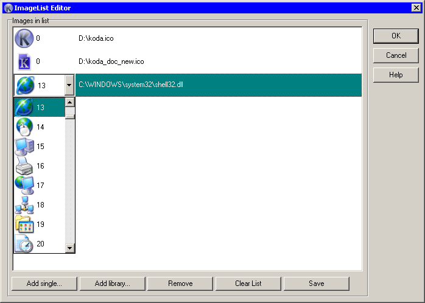

This is editor for creating imagelists.

Add single… button add single icon, even for exe's with multiple icons and icon libraries.
Add library… button add all icons from exe or icon library.
Remove - remove current icon from the list.
Clear List - remove all icons from the list.
Save - saving icons from list to new icon library (see remarks).
If file for certain icon contain more then one icon, clicking on left side of list open combo box with all icons available in this file.
Windows Vista and up is not supported 16-bit icon libraries (old .icl, .nil libraries usually are 16-bit). Koda can save image list as new 32-bit library (.dll) that supported by newer OS. So, for converting your old library to new format, just load it to editor as library, and then save it.
Saving function also useful for consolidate icons from different sources to single library.